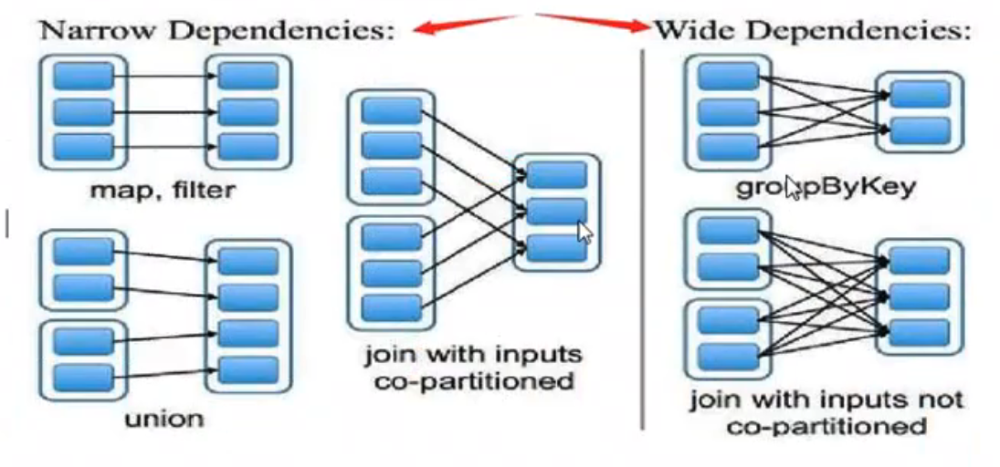
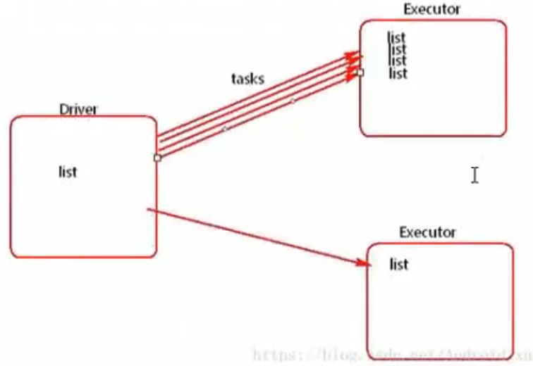
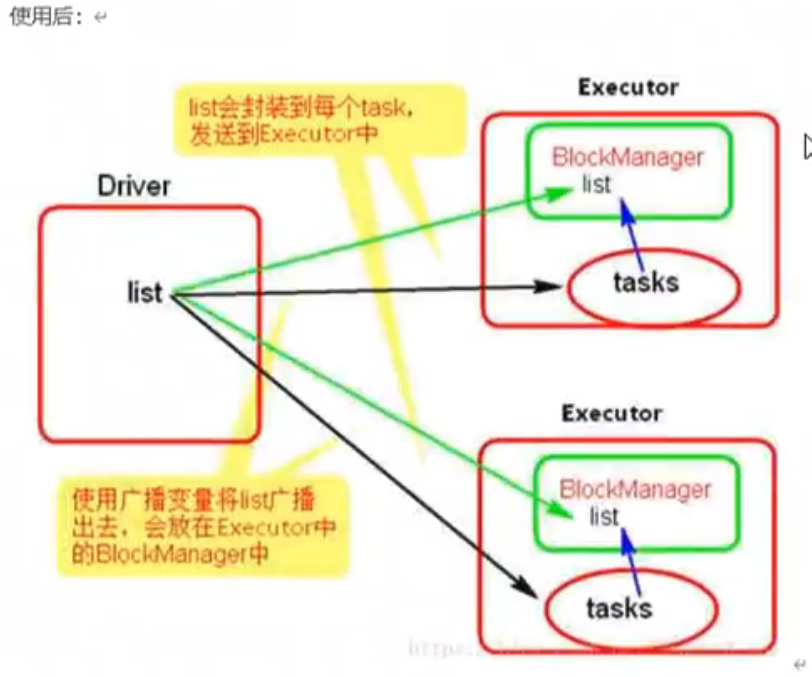
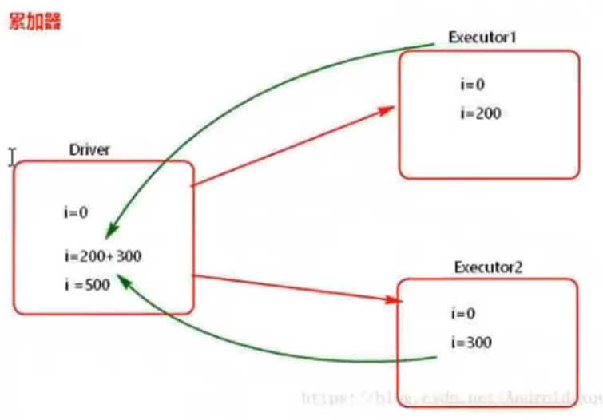
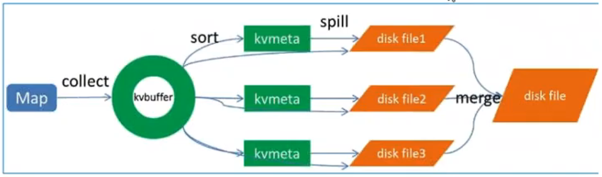
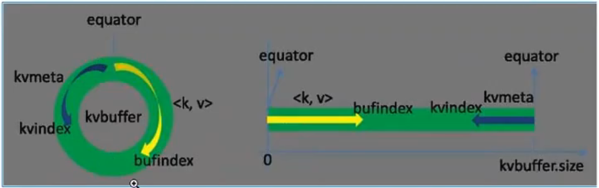

Spark Core
RDD
- Resilient distributed dataset
- Fault tolerance
- distributed
- immutable data structure, stored in disk or memory
- There are multiple partitions(#partitions is the same as #machines) within one RDD
- DN(Data Node to store data) and Worker(to compute) are all in one machine(best practice)
- only shuffle need data transfering with network, others are in local machine
reduceByKey
hadoop ---> (hadoop, 1)
hadoop ---> (hadoop, 1)
hadoop ---> (hadoop, 1)
hive ---> (hive, 1)
hive ---> (hive, 1)
hive ---> (hive, 1)- reduceByKey
<hadoop, [1, 1, 1]>
<hive, [1, 1, 1]>- shuffle
hash(hadoop) ---> hashcode % 3 = 1(machine 1)
hash(hive) ---> hashcode % 3 = 2(machine 2)operations
transformation: RDD–>RDD
| Operations | Summary |
|---|---|
| map | return a new RDD |
| filter | return a new RDD; true: keep, false: remove |
| flatMap | map + flat(from two dimentional to one dimentional) |
| groupByKey | |
| reduceByKey | groupByKey(get <hadoop, [1, 1, 1]>) + map(get <hadoop, 3>) |
| sortByKey | not default in spark, but default in hadoop |
| join | cogroup + remove nulls: join by key of <key, value>, all pairs will handle by cutomized function |
| cogroup | full join |
action: RDD–>anything else
| Operations | Summary |
|---|---|
| reduce | operation on all elements within RDD, first merges with second element, and then the result merges with the third element, … |
| collect | get all elements within RDD to local client |
| count | get the total number of elements within RDD |
| take(n) | get first unsorted n elements within RDD, top(n) can have first sorted n elements |
| takeOrdered(n, [ordering]) | get first sorted n elements within RDD using natural order or a custom comparator |
| saveAsTextFile | save to file, each element with toString method |
| countByKey | |
| foreach | iterate each element within RDD |
Depencencies(This topic is Transformation operation related)

- with shuffle(internet connections between different machines) is wide dependency
- without shuffle is narrow dependency
the number of stages is depended on the number of wide dependencies
narrow dependencies - 1 : 1
每个父RDD的分区都至多被一个子RDD的分区使用。一对一
- 输入输出一对一，结果RDD的分区结构不变，主要是map, flatMap
- 输入输出一对一，但结果RDD的分区结构发生变化，如union, coalesce
- 从输入中选择部分元素的算子，如filter, distinct, subtract, sample
wide dependencies - multiple : multiple
多个子RDD的分区依赖一个父RDD的分区。一对多
- 对单个RDD基于key进行分组，如groupByKey, reduceByKey
- 对两个RDD基于key进行join，如join
Create sparkContext
from pyspark.sql import SparkSession
spark = SparkSession.builder.master("spark://localhost:7077").appName("rdd_demos").getOrCreate()
sc = spark.sparkContextCreate RDD
1. parallelize array
# parallelize array in memory to crete RDD
arr1 = [1, 2, 3, 4, 5, 6, 7, 8, 9, 10] # run in client
rdd1 = spark.sparkContext.parallelize(arr1) # run in server
# This is an Action, return RDD to Driver
rdd1.collect()
# check the number of partitions of current RDD
rdd1.getNumPartitions()
# OR
# create RDD like this # range(start = 0, end, step = 1)
rdd2 = spark.sparkContext.parallelize(range(3, 11, 1))
rdd2.collect()2. load data from outside
- txt file
file = "/opt/module/spark-3.5.0-bin-hadoop3/data/core/data/workcount.txt"
rdd3 = spark.sparkContext.textfile(file)
rdd3.collect()- json file
jsonFile = "/opt/module/spark-3.5.0-bin-hadoop3/data/core/data/people.json"
jsonRDD = sc.textFile(jsonFile)
jsonRDD.collect()
# python use json module to handle json file
import json
result = jsonRDD.map(lambda line: json.loads(line))
result.collect()
# for d in result.collect():
# print(d)RDD Operations
transformation: RDD–>RDD
# Suppose we have an RDD, including {1, 2, 3, 3}
# first, create a RDD
data = spark.sparkContext.parallelize([1, 2, 3, 3])
# map
data_rdd1 = data.map(lambda x: x + 1)
data_rdd1.collect() # [2, 3, 4, 4]
# flatMap
data_rdd2 = data.flatMap(lambda x: range(x, 4))
data_rdd2.collect() # [1, 2, 3, 2, 3, 3, 3]
# filter
data_rdd3 = data.filter(lambda x: x != 1)
data_rdd3.collect() # [2, 3, 3]
# distinct
data_rdd4 = data.distinct()
data_rdd4.collect() # [1, 2, 3]
# sample: sample(withReplacement, fraction, seed)
# withReplacement param: 是否放回采样
# fraction param: 抽取比例
# seed param: random seed(optional)
data_rdd5 = data.sample(False, 0.5)
data_rdd5.collect()
# takeSample: Action not Transformation
# sample + take(2)
data_rdd51 = data.takeSample(False, 2)
print(data_rdd51)# Suppose we have two RDDs, {1, 2, 3, 3} and {3, 4, 5}
# first, create two RDDs
data1 = spark.sparkContext.parallelize([1, 2, 3, 3])
data2 = spark.sparkContext.parallelize([3, 4, 5])
# union
# similar to union all in mysql, not union in mysql
data1.union(data2).collect() # [1, 2, 3, 3, 3, 4, 5]
# intersection
data1.intersection(data2).collect() # [3]
# subtract
data1.subtract(data2).collect() # [1, 2]
# cartesian
data1.cartesian(data2).collect()
# [(1, 3),
# (1, 4),
# (1, 5),
# (2, 3),
# (2, 4),
# (2, 5),
# (3, 3),
# (3, 4),
# (3, 5),
# (3, 3),
# (3, 4),
# (3, 5)]# groupBy
a = spark.sparkContext.parallelize(["black", "blue", "white", "green", "grey"])
b = a.groupBy(lambda x: len(x)).collect()
print(b) # [(4, <pyspark.resultiterable.ResultIterable object at 0x7f95187af580>), (5, <pyspark.resultiterable.ResultIterable object at 0x7f95087b5c10>)]
sorted([(x, sorted(y)) for (x, y) in b]) # [(4, ['blue', 'grey']), (5, ['black', 'green', 'white'])]action: RDD–>anything else
# create a RDD
rdd = spark.sparkContext.parallelize([1, 2, 3, 3])
rdd.count() # 4
rdd.collect() # [1, 2, 3, 3]
rdd.first() # 1
rdd.countByValue() # defaultdict(int, {1: 1, 2: 1, 3: 2})
rdd.take(2) # [1, 2]
rdd.takeOrdered(2) # [1, 2]
rdd.takeOrdered(2, key=lambda x: -x) # [3, 3]
rdd.takeSample(False, 2)
rdd.reduce(lambda x, y: x + y) # 9
# reduce
# x:("", 0), y:("hadoop", 1)
# x:("hadoop", 1), y:("hadoop", 1)
# x:("hadoophadoop", 2)
# reduceByKey: ignore key, only care value
# x:0, y:1
# x:1, y:1
# x:2, y:1
rdd.fole(0, lambda x, y: x + y)
# fold
# has an initial value for each partition and one more for merging
# aggregate(zeroValue, seqOp, combOp)
print("RDD 当前的分区数是: ", rdd.getNumPartitions()) # RDD 当前的分区数是: 8
seqOp = (lambda x, y: x * y) # 每个分区执行的函数
combOp = (lambda x, y: x + y) # 各个分区结果最后聚集时使用的函数
result = rdd.aggregate(2, seqOp, combOp)
result # 28
seqOp = (lambda x, y: (x[0] + y, x[1] + 1))
combOp = (lambda x, y: (x[0] + y[0], x[1] + y[1]))
result1 = spark.sparkContext.parallelize([1, 2, 3, 4]).aggregate((0, 0), seqOp, combOp)
print(result1) # (10, 4)
result2 = spark.sparkContext.parallelize([]).aggregate((0, 0), seqOp, combOp)
print(result2) # (0, 0)reduceis the special case offoldfoldis the special case ofaggregate
RDD action on numeric data(description statistics)
rdd1 = sc.parallelize(range(1, 21, 2))
rdd1.collect()
rdd1.sum()
rdd1.max()
rdd1.min()
# mean
rdd1.mean()
rdd1.count()
# variance
rdd1.variance()
# sample variance
rdd1.sampleVariance()
# standard deviation
rdd1.stdev()
# sample standard deviation
rdd1.sampleStdev()
# Histogram reference: https://blog.csdn.net/hit0803107/article/details/52807485
# Approach 1
rdd1.histogram([1.0, 8.0, 20.9])
# Approach 2
rdd1.histogram(3)
# 通过调用stats()方法，返回一个StatsCounter对象
status = rdd1.stats()
print(status.sum())
print(status.max())
print(status.min())
print(status.mean())
print(status.count())
print(status.variance())
print(status.stdev())Pair RDD Operations
create Pair RDD
# There are multiple ways to create Pair RDD
# Approach 1: load from file, and then transform to Pair RDD
file = "/data/spark_demo/rdd/wc.txt"
lines = spark.sparkContext.textFile(file)
pairRDD = lines.flatMap(lambda line: line.split(" ")).map(lambda word: (word, 1))
pairRDD.collect()# Approach 2: parallelize array
rdd = spark.sparkContext.parallelize(["Hadoop", "Spark", "Hive", "Spark"])
pairRDD = rdd.map(lambda word: (word, 1))
pairRDD.collect() # [('Hadoop', 1), ('Spark', 1), ('Hive', 1), ('Spark', 1)]# Approach 3: keyBy(): customize the rule for key grouping
a = spark.sparkContext.parallelize(["black", "blue", "white", "green", "grey"])
# with cutomized function to create keys, return Pair RDD
b = a.keyBy(lambda x: len(x))
b.collect() # [(5, 'black'), (4, 'blue'), (5, 'white'), (5, 'green'), (4, 'grey')]# Approach 4: creating with tuple
pets = spark.sparkContext.parallelize([("cat", 1), ("dog", 1), ("cat", 2)])
pets.collect() # [('cat', 1), ('dog', 1), ('cat', 2)]transformation on Pair RDD
reduceByKeyis special case ofaggregateByKeyaggregateByKeyis special case ofcombineByKey
# Suppose we have a pair RDD [(1, 2), (3, 4), (3, 6)]
# Create Pair RDD
pairRDD = spark.sparkContext.parallelize([(1, 2), (3, 4), (3, 6)])
pairRDD.collect()# reduceByKey(func)
pairRDD.reduceByKey(lambda x, y: x + y).collect() # [(1, 2), (3, 10)]
# groupByKey()
pairRDD.groupByKey().collect()
# [(1, <pyspark.resultiterable.ResultIterable at 0x7f94d9638970>),
# (3, <pyspark.resultiterable.ResultIterable at 0x7f94d021f550>)]
# keys: return all keys
pairRDD.keys().collect() # [1, 3, 3]
# values: return all values
pairRDD.values().collect() # [2, 4, 6]
# sortByKey(): default is increasing
pairRDD.sortByKey().collect() # [(1, 2), (3, 4), (3, 6)]
# pairRDD.sortByKey(ascending=False).collect()
pairRDD.sortByKey(False).collect() # [(3, 4), (3, 6), (1, 2)]
# mapValues(func): apply func to each element of Pair RDD, without chaning key
pairRDD.mapValues(lambda x: x * x).collect() # [(1, 4), (3, 16), (3, 36)]
# flatMapValues(func)
pairRDD.flatMapValues(lambda x: range(x, 6)).collect() # [(1, 2), (1, 3), (1, 4), (1, 5), (3, 4), (3, 5)]# combineByKey()
data = spark.sparkContext.parallelize([("company-1", 92), ("company-1", 85), ("company-1", 82),\
("company-1", 93), ("company-1", 86), ("company-1", 83),\
("company-2", 78), ("company-2", 96), ("company-2", 85),\
("company-3", 88), ("company-3", 94), ("company-3", 80)], 3)
cbk = data.combineByKey(
lambda income: (income, 1),
lambda t, income: (t[0] + income, t[1] + 1),
lambda t1, t2: (t1[0] + t2[0], t1[1] + t2[1])
)
# total income of each company
cbk.collect() # [('company-1', (521, 6)), ('company-3', (262, 3)), ('company-2', (259, 3))]
# average income of each company
cbk.map(lambda t: (t[0], t[1][0], t[1][0]/float(t[1][1]))).collect()
# [('company-1', 521, 86.83333333333333),
# ('company-3', 262, 87.33333333333333),
# ('company-2', 259, 86.33333333333333)]# reduceByKey()
x = spark.sparkContext.parallelize([("a", 1), ("b", 1), ("a", 1), ("a", 1), ("b", 1), ("b", 1), ("b", 1), ("b", 1)], 2)
# apply reduceByKey
y = x.reduceByKey(lambda accum, n: accum + n)
y.collect() # [('b', 5), ('a', 3)]
# customize func separately
def sumFunc(accum, n):
return accum + n
y = x.reduceByKey(sumFunc)
print(y.collect()) # [('b', 5), ('a', 3)]# groupByKey()
x = spark.sparkContext.parallelize([
("USA", 1), ("USA", 2), ("India", 1),\
("UK", 1), ("India", 4), ("India", 9),\
("USA", 8), ("USA", 3), ("India", 4),\
("UK", 6), ("UK", 9), ("UK", 5)], 4)
# utilize groupByKey, default partition
y = x.groupByKey()
# check partitions
print("number of partitions: ", y.getNumPartitions())
# utilize pre-defined partition
y = x.groupByKey(2)
print("number of partitions: ", y.getNumPartitions())
# output result
for t in y.collect():
print(t[0], [v for v in t[1]])# aggregateByKey
# utilize key-value pair creating pairRDD studentRDD
student_rdd = spark.sparkContext.parallelize([
("Joseph", "Maths", 83), ("Joseph", "Physics", 74), ("Joseph", "Chemistry", 91),\
("Joseph", "Biology", 82), ("Jimmy", "Maths", 69), ("Jimmy", "Physics", 62),\
("Jimmy", "Chemistry", 97), ("Jimmy", "Biology", 80), ("Tina", "Maths", 78),\
("Tina", "Physics", 73), ("Tina", "Chemistry", 68), ("Tina", "Biology", 87),\
("Thomas", "Maths", 87), ("Thomas", "Physics", 93), ("Thomas", "Chemistry", 91),\
("Thomas", "Biology", 74), ("Cory", "Maths", 56), ("Cory", "Physics", 65),\
("Cory", "Chemistry", 71), ("Cory", "Biology", 68), ("Jackeline", "Maths", 86),\
("Jackeline", "Physics", 62), ("Jackeline", "Chemistry", 75), ("Jackeline", "Biology", 83),\
("Juan", "Maths", 63), ("Juan", "Physics", 69), ("Juan", "Chemistry", 64),\
("Juan", "Biology", 60)], 2)
# define Sequential Operation and Combiner Operation
# Sequential Operation: find maximum score from single partition
def seq_op(accumulator, element):
if (accumulator > element[1]):
return accumulator
else:
return element[1]
# Combiner Operation: find maximum score from accumulators of all partitions
def comb_op(accumulator1, accumulator2):
if (accumulator1 > accumulator2):
return accumulator1
else:
return accumulator2
# In our scenario, zero value is 0, because we are trying to find the maximum score
zero_val = 0
aggr_rdd = student_rdd.map(lambda t: (t[0], (t[1], t[2]))).aggregateByKey(zero_val, seq_op, comb_op)
# Check output
for tpl in aggr_rdd.collect():
print(tpl)
# ('Jimmy', 97)
# ('Tina', 87)
# ('Thomas', 93)
# ('Joseph', 91)
# ('Cory', 71)
# ('Jackeline', 86)
# ('Juan', 69)
# redefine Sequential Operation and Combiner Operation
def seq_op(accumulator, element):
return (accumulator[0] + element[1], accumulator[1] + 1)
def comb_op(accumulator1, accumulator2):
return (accumulator1[0] + accumulator2[0], accumulator1[1] + accumulator2[1])
zero_val = (0, 0)
aggr_rdd = student_rdd.map(lambda t: (t[0], (t[1], t[2])))\
.aggregateByKey(zero_val, seq_op, comb_op)\
.map(lambda t: (t[0], t[1][0]/t[1][1]*1.0))
for tpl in aggr_rdd.collect():
print(tpl)
# ('Jimmy', 77.0)
# ('Tina', 76.5)
# ('Thomas', 86.25)
# ('Joseph', 82.5)
# ('Cory', 65.0)
# ('Jackeline', 76.5)
# ('Juan', 64.0)RDD cache
overview
- One of the reasons why Spark is so fast is that it can cache datasets in memory during different operations.
- When an RDD is cached, each node will save the partition computation result in memory and reuse them in other actions performed on this RDD or derived RDDs. This makes subsequenct actions much faster.
- Cache is key to building iterative algorithms and fast iteractive queries in Spark.
approaches
- persist
- cache
- only after triggering actions, then current RDD will be cached in memory for later use
- cache invoke persist at last, the default storage level just a part in memory
/** Persist this RDD with the default storage level (MEMORY_ONLY)
def persist(): this.type = persist(StorageLevel.MEMORY_ONLY)
/** Persist this RDD with the default storage level (MEMORY_ONLY)
def cache(): this.type = persist()- There are many storage levels in Spark, storage level is defined in object StorageLevel
object StorageLevel {
val NONE = new StorageLevel(false, false, false, false)
val DISK_ONLY = new StorageLevel(true, false, false, false)
val DISK_ONLY_2 = new StorageLevel(true, false, false, false, 2)
val MEMORY_ONLY = new StorageLevel(false, true, false, true)
val MEMORY_ONLY_2 = new StorageLevel(false, true, false, true, 2)
val MEMORY_ONLY_SER = new StorageLevel(false, true, false, false)
val MEMORY_ONLY_SER_2 = new StorageLevel(false, true, false, false, 2)
val MEMORY_AND_DISK = new StorageLevel(true, true, false, true)
val MEMORY_AND_DISK_2 = new StorageLevel(true, true, false, true, 2)
val MEMORY_AND_DISK_SER = new StorageLevel(true, true, false, false)
val MEMORY_AND_DISK_SER_2 = new StorageLevel(true, true, false, false, 2)
val OFF_HEAP = new StorageLevel(false, false, true, false)
}- Fault tolerance can recompute some failed partitions of RDD, not all partitions of all RDD
- partitions within a RDD are independent
examples
from pyspark import StorageLevel
rdd1.sc.textFile('/xxxx')
rdd1.persist(StorageLevel.MEMORY_AND_DISK) # set storage level
rdd2 = rdd1.flatMap(lambda line : line.split(' '))
rdd3 = rdd2.map(lambda word : (word, 1))
rdd4 = rdd3.reduceByKey(lambda a, b : a + b)
rdd4.collect()Fault tolerance
- mysql: bin_log日志文件（预写日志）
- hbase: wal(write ahead log: 预写日志)
- hdfs: 副本策略（3）
overview
- fault tolerance for spark: use Lineage and Checkpoint
lineage mechanism: suit for narrow dependency
- RDD’s lineage records Coarse-grained specific data from Transformation operation. So when some partitions of a RDD lost data, it can reload or recompute from Lineage.
- This Coarse-grained data model limited use cases of Spark, so that Spark cannot use for high performance scenarios.
Spark Lineage mechanism is performed through RDD dependencies:
- narrow dependency: certain data of child RDD can be directly computed from certain data of parent RDD
- wide dependency: recompute all parents’ RDD, then after finished and hashing, recomputing children RDD. When we deal with long lineage, we need set appropriate checkpoint.
checkpoint mechanism: suit for wide dependency
- There are two approaches:
- LocalRDDCheckpointData: temporarly saved in local disk and memory. It’s fast, good for scenarios that lineage info needed to be deleted frequently(e.g. GraphX), can tolerate executor fail.
- ReliableRDDCheckpointData: saved in reliable outside storage(e.g. HDFS), can tolerate driver fail. It’s not fast as local, but it has the highest fault tolerance level.
If the code doesn’t setup checkpoint, it will use local mode checkpoint. If the path is setup, it will use reliable mode checkpoint.
- RDD’s action triggering computation, then executing checkpoint.
- If task fails, it will load data from checkpoint to compute
checkpoint example
from pyspark.sql import SparkSession
spark = SparkSession.builder.master("spark://localhost:7077").appName("rdd_demos").getOrCreate()
sc = spark.sparkContext
sc.setCheckpointDir('hdfs://localhost:9000/spark/checkpoint') # set directory for saving
from pyspark import StorageLevel
rdd1.sc.textFile('/xxxx')
rdd1.persist(StorageLevel.MEMORY_AND_DISK)
rdd2 = rdd1.flatMap(lambda line : line.split(' '))
rdd3 = rdd2.map(lambda word : (word, 1))
rdd3.checkpoint() # set checkpoint
print(rdd3.isCheckpointed()) # check if RDD is set checkpoint
print(rdd3.getCheckpointFile()) # get the path of saved checkpoint,
rdd4 = rdd3.reduceByKey(lambda a, b : a + b)
rdd4.collect()
spark.stop()# check hdfs if has rdd checkpoint
./bin/hdfs dfs -cat /spark/checkpoint/a335287f-f7aa-408b-a767-0146faalefff/rdd-2/part-00000difference between checkpoint and cache
- checkpoint will cut off the lineage, and save some data
- cache just save some data
Data Partitions
-
RDD is very large, it will be cutted into partitions saved in different nodes. This is where RDD come from.
-
how to manually setup partitions:
- creating RDD: when executing textFile and parallelize methods, manually assign the number of partitions. e.g.
sc.textFile(path, partitionNum) - get new RDD with transforming operation: directly executing repartition
- creating RDD: when executing textFile and parallelize methods, manually assign the number of partitions. e.g.
#partitions == #task == #core(thread) of cpu
- the number of executor = totoal-executor-core/executor-core
exmaple
3 files: 17B, 7B, 165B
totalSize = 189B
- default the minimum number of partitions in Scala: Math.min(#core, 2) = 2
- goalSize = 189 / 2 = ? // the maximum size for each partition
17B, 94.5B, 128M
// Math.max(minSize, Math.min(goalSize, blockSize))
splitSize = Math.max(17B, Math.min(94.5B, 128M)) = 94.5B- 文件大小与分片大小比较：
- a.txt: 17B < 94.5B 一个分区
- b.txt: 7B < 94.5B 一个分区
- c.txt: 165B > 94.5B 两个分区
- 一共四个分区
assign partitions when creating RDD
from pyspark.sql import SparkSession
spark = SparkSession.builder.master("spark://localhost:7077").appName("rdd_demos").config("spark.default.parallelism", 1).getOrCreate() # setup default parallelism
sc = spark.sparkContext
rdd1 = sc.parallelize([1, 2, 3, 4, 5, 6, 7, 8], 3) # assign the num of partitions here
print(rdd1.collect())
# the default num of partitions is 2
# rule: max(2, num-executor-core(the number of cpu thread(core) within each executor))
print(rdd1.getNumPartitions()) # rdd1的分区数量
# check how it is partitioned
rdd1.glom().collect()assign partitions when transforming RDD
repartitionandcoalesce(numPartitions, isShuffle = True)repartition(10)<==>coalesce(10, True)
it’s faster without shuffle
rdd.coalesce(1, False): ifisShufleis false, it cannot increase the number of partitions, 只能减少分区数
# as for new RDD from transforming, directly executing repartition to get new partitions
rdd2 = rdd1.map(lambda x : x * x) # get rdd2 with transforming
print(rdd2.collect())
rdd3 = rdd2.repartition(3) # repartition, get rdd3
rdd3.getNumPartitions() # the number of partitions of rdd3
rdd3.glom().collect() # check distributionscustomize partition function
pairs = sc.parallelize([(1, 1), (2, 2), (3, 3)])
print(pairs.getNumPartitions())
repairs = pairs.repartition(4) # 重新分区
print(repairs.getNumPartitions())
# customize partition function
partitionedRDD = pairs.partitionBy(2, lambda k: int(k)) # use specific partition function
partitionedRDD.persist() # 持久化，以便后续操作重复使用partitioned,避免重复分区
print(partitionedRDD.getNumPartitions())# for example: write to different files depending on the last digit of key
# customized partition function
def UsridPartitioner(key):
return int(key) % 10
# simulate 5 partitions' data
data = sc.parallelize(range(1, 21), 5)
# use the last digit of key, changing to 10 partitions, writing to 10 files
result = data.map(lambda n: (n, 1))\
.partitionBy(numPartitions=10, partitionfunc=UsridPartitioner) # we can also use lambda here
# result.saveAsTextFile("/data/spark_demo/rdd/partition-output")
result.collect()Shared Variables
overview
- spark has many nodes(machines), and they are independent. spark automatically send referenced variables to each node through network, it’s convinent but inefficient. So shared variables are necessary.
- spark provides two kinds of shared variable with limited type: broadcast and accumulator
 
broadcast
driver define broadcast, and send to each node(or machine) only one time
- introduce a broadcast, give all nodes a readable value, instead of sending data through network and saving a copy. This improves the efficiency.
- approach:
- use
broadcast()withinsparkContextto create broadcast. - use
valueto get broadcast value - use
unpersist()to remove the broadcast
- use
a broadcast will only send to each node once, it’s read-only
utilize broadcast
broads = sc.broadcast(3) # create broadcast, it can be any type
lists = [1, 2, 3, 4, 5] # create a list for testing
listRDD = sc.parallelize(lists) # create a RDD
results = listRDD.map(lambda x: x * broads.value)
print("result is", end = ":")
results.collect() # [3, 6, 9, 12, 15]update broadcast
# update broadcast, use unpersist()
# broadcast is read-only, we cannot update broadcast, we need to remove the old broadcast, then create a new one
# create dict
mapper = {"dog":1, "cat":2}
# create broadcast
broadcatVar = sc.broadcast(mapper)
# update: 1. broadcast
broadcatVar.unpersist()
# update: 2. change the dict has to be changed
mapper["pig"] = 1
# update: 3. create broadcast again
broadcatVar = sc.broadcast(mapper)
# get the value
broadcatVar.valuerelease broadcast
# destroy() method is used to release broadcast
# we cannot use broadcast again after this method
data = ['data', 'cat', 'dog', 'cat', 'cat']
rdd = sc.parallelize(data)
mapper = {'dog':1, 'cat':2}
broadcatVar = sc.broadcast(mapper)
print(broadcatVar.value)
# destroy broadcast
broadcatVar.destroy()
# the value after destroying
print(broadcatVar.value)
# cannot use it with function
# rdd.map(lambda t:broadcatVar.value.get(t)).collect()accumulator
- it is shared among nodes, and it will collect data from nodes to driver
- approaches:
- call
accumulatorwithin Driver’sSparkContextto create accumulator, and give it a name for checking later in Web UI
- call
# sum arrary with accumulator
accum = sc.accumulator(0)
print(accum.value) # 0
sc.parallelize([1, 2, 3, 4]).foreach(lambda x: accum.add(x))
print(accum.value) # 10
acc = sc.accumulator(0)
print(acc.value) # 0
list1 = sc.parallelize(range(1, 1000001))
# run in executors
list1.foreach(lambda x: acc.add(1))
# run in driver
acc.value # 1000000
Shuffle
- ShuffleManager handle all shuffle related execution, calculation and operations
- Before Spark 1.2, HashShuffleManager is default. It has many temperary disk files, and these disk IO affects performance alot.
- After Spark 1.2, SortShuffleManager is default. It also has many temperary disk files, but it merges all temp files into one disk file, and thus each Task only has one disk file. At next stage, when shuffle read task use their own data, they just get some data through indexing of disk file.
overview
how it work
normal mechanism
bypass mechanism
-
shuffle map task 数量小于
spark.shuffle.sort.bypassMergeThreshold参数的值不是聚合类的shuffle算子(e.g. reduceByKey) -
map machine: shuffle write data to local disk file
-
reduce machine: shuffle read data from disk file of map machine
Note: red 1, green 2, blue 3 are all represent partitions, the number of partition are three

- Spill includes 输出、排序、溢写、合并
